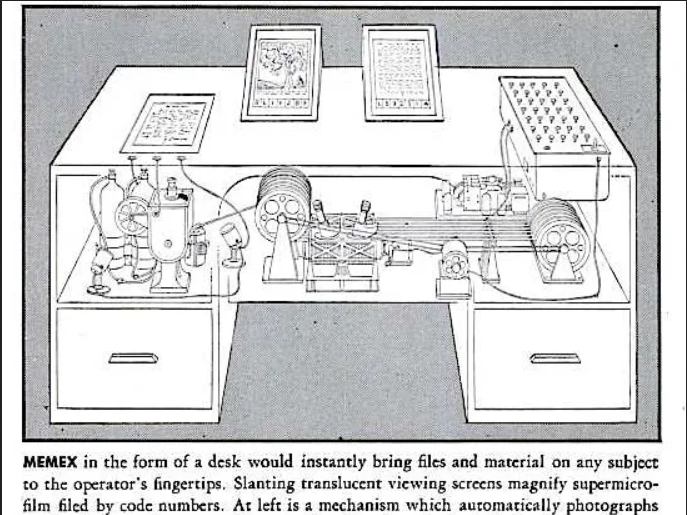

On Itch.io, one can simply upload their game, add information and tags along with the
files, and post them for all to see. The structure of the site brings to mind Vannevar Bush’s
“Memex”, as mentioned in his article “As We May Think”, through its use of tags and filters.
>

One can easily find the genre, medium, cost range, and other details they are looking for through these
tags. If one has something specific in mind, like a creator or title, they can use the search bar to find
it. However, unlike Bush’s “Memex”, which is a personal system for keeping track of information, Itch.io
uses a system shared and maintained by many. It’s reliant on each user's understanding of it and willingness
to cooperate with it in order to remain easy to understand and follow.